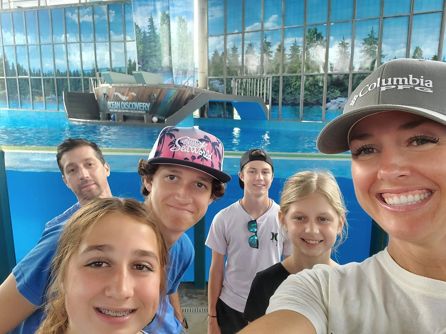

About Me
My name is Sarah, and I’m originally from Salt Lake City, Utah, but I’ve been living in the Houston area for 11 years. I graduated from the University of Utah with a BS in Chemistry and a minor in Mathematics. I have four kids, ranging in age from 20 to 13. My oldest is currently serving a mission in Oaxaca, Mexico, while my second son is attending BYU-Idaho for a semester before he leaves for his mission. I have two daughters at home, ages 16 and 13.
I love creating and designing things, which is why I’m pursuing a degree in Software Development and a certificate in Graphic Design. I also enjoy designing websites. In my free time, I love spending time with my family and sailing on the lake. 
The Woodlands, Texas
Living near Houston, Texas it isn't hard to become an Astros fan.
Here are some fun facts about the Astros: In 1965, the team changed its name to the Astros, reflecting Houston's role as the control center of America's space program. Minute Maid Park is one of only six stadiums in MLB history to have a retractable roof AND a natural grass playing surface - Atlanta's SunTrust Park is the other one.